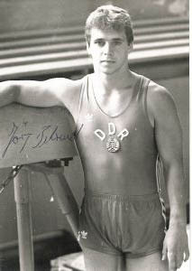

Jorg Behrend (GDR)
1989 World V Champion

Medal Total
World Championships: 1 Gold, 1 Silver
Jorg was born on December 24, 1966.
Competition Results
1984
Jr. Friendship Tournament (Druzhba): 14th AA
1987
Chunichi Cup: 12th AA, 5th R, 6th FX
Tokyo Cup: 6th PH, 6th HB
1988
China Cup: 3rd AA
Chunichi Cup: 3rd AA, 3rd R, 6th PB, 7th FX, 8th V
Cottbus International: 6th AA, 2nd R
GDR Championships: 1st FX
Hungarian International: 15th AA
Swiss Cup: 2nd AA
Tokyo Cup: 3rd R, 4th V, 6th FX
1989
Chunichi Cup: 22nd AA
Cottbus International: 2nd AA
DTV Cup: 6th AA
European Championships: 11th AA, 6th V
World Championships: 2nd Team, 22nd AA (prelims), 1st V
1992
American Cup: 12th AA (prelims)
Intl. Mixed Pairs: 10th Team
1993
Cottbus International: 6th AA, 2nd R
GER-SUI Dual Meet: 1st Team, 3rd AA
World Championships: 25th AA (prelims)
2000
GER Championships: 20th AA
This page was created on November
05, 2005.
© Gymn Forum